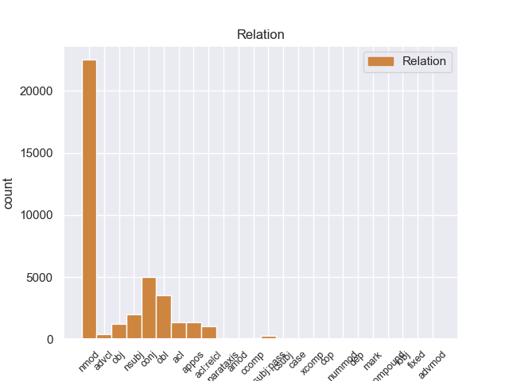
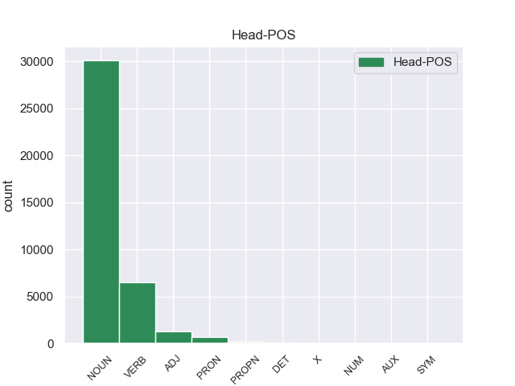
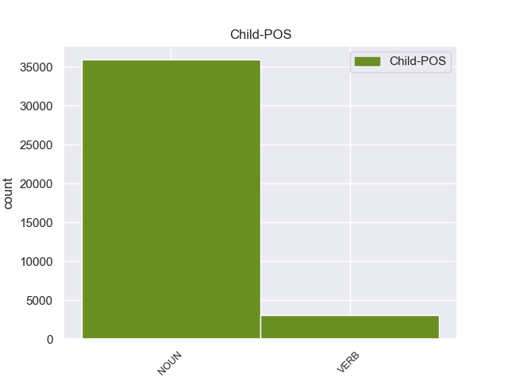

Distribution of features within this leaf



Agreement Rules sorted by frequency.
- When the dependent token is the nominal modifier(nmod) of the head token, and the dependent token is NOUN.
1 La _ _ _ _ 0 _ _ _
2 hidrocefalia _ _ _ _ 0 _ _ _
3 comunicante _ _ _ _ 0 _ _ _
4 ocurre _ _ _ _ 0 _ _ _
5 cuando _ _ _ _ 0 _ _ _
6 el _ _ _ _ 0 _ _ _
7 flujo flujo NOUN _ Gender=Masc|Number=Sing 0 _ _ _
8 de _ _ _ _ 0 _ _ _
9 el _ _ _ _ 0 _ _ _
10 líquido líquido NOUN _ Gender=Masc|Number=Sing 7 nmod _ _
11 cefaloraquídeo _ _ _ _ 0 _ _ _
12 se _ _ _ _ 0 _ _ _
13 ve _ _ _ _ 0 _ _ _
14 bloqueado _ _ _ _ 0 _ _ _
15 después _ _ _ _ 0 _ _ _
16 de _ _ _ _ 0 _ _ _
17 salir _ _ _ _ 0 _ _ _
18 de _ _ _ _ 0 _ _ _
19 los _ _ _ _ 0 _ _ _
20 ventrículos _ _ _ _ 0 _ _ _
21 a _ _ _ _ 0 _ _ _
22 el _ _ _ _ 0 _ _ _
23 espacio _ _ _ _ 0 _ _ _
24 subaracnoideo _ _ _ _ 0 _ _ _
25 . _ _ _ _ 0 _ _ _
1 Van _ _ _ _ 0 _ _ _
2 Damme _ _ _ _ 0 _ _ _
3 coreografió _ _ _ _ 0 _ _ _
4 de _ _ _ _ 0 _ _ _
5 la _ _ _ _ 0 _ _ _
6 pelea _ _ _ _ 0 _ _ _
7 final _ _ _ _ 0 _ _ _
8 entre _ _ _ _ 0 _ _ _
9 su _ _ _ _ 0 _ _ _
10 personaje personaje NOUN _ Gender=Masc|Number=Sing 0 _ _ _
11 y _ _ _ _ 0 _ _ _
12 el _ _ _ _ 0 _ _ _
13 personaje personaje NOUN _ Gender=Masc|Number=Sing 10 conj _ _
14 de _ _ _ _ 0 _ _ _
15 Stallone _ _ _ _ 0 _ _ _
16 . _ _ _ _ 0 _ _ _
1 La _ _ _ _ 0 _ _ _
2 totalidad _ _ _ _ 0 _ _ _
3 de _ _ _ _ 0 _ _ _
4 los _ _ _ _ 0 _ _ _
5 libros _ _ _ _ 0 _ _ _
6 de _ _ _ _ 0 _ _ _
7 cuentos _ _ _ _ 0 _ _ _
8 , _ _ _ _ 0 _ _ _
9 y _ _ _ _ 0 _ _ _
10 casi _ _ _ _ 0 _ _ _
11 todas _ _ _ _ 0 _ _ _
12 sus _ _ _ _ 0 _ _ _
13 novelas _ _ _ _ 0 _ _ _
14 ( _ _ _ _ 0 _ _ _
15 salvo _ _ _ _ 0 _ _ _
16 La _ _ _ _ 0 _ _ _
17 literatura _ _ _ _ 0 _ _ _
18 nazi _ _ _ _ 0 _ _ _
19 en _ _ _ _ 0 _ _ _
20 América _ _ _ _ 0 _ _ _
21 , _ _ _ _ 0 _ _ _
22 publicada publicado VERB _ Gender=Fem|Number=Sing|VerbForm=Part 0 _ _ _
23 por _ _ _ _ 0 _ _ _
24 la _ _ _ _ 0 _ _ _
25 editorial editorial NOUN _ Gender=Fem|Number=Sing 22 obl _ _
26 Seix _ _ _ _ 0 _ _ _
27 Barral _ _ _ _ 0 _ _ _
28 , _ _ _ _ 0 _ _ _
29 y _ _ _ _ 0 _ _ _
30 Consejos _ _ _ _ 0 _ _ _
31 de _ _ _ _ 0 _ _ _
32 un _ _ _ _ 0 _ _ _
33 discípulo _ _ _ _ 0 _ _ _
34 ... _ _ _ _ 0 _ _ _
35 , _ _ _ _ 0 _ _ _
36 reeditada _ _ _ _ 0 _ _ _
37 por _ _ _ _ 0 _ _ _
38 la _ _ _ _ 0 _ _ _
39 Editorial _ _ _ _ 0 _ _ _
40 Acantilado _ _ _ _ 0 _ _ _
41 ) _ _ _ _ 0 _ _ _
42 , _ _ _ _ 0 _ _ _
43 fue _ _ _ _ 0 _ _ _
44 publicada _ _ _ _ 0 _ _ _
45 por _ _ _ _ 0 _ _ _
46 Anagrama _ _ _ _ 0 _ _ _
47 . _ _ _ _ 0 _ _ _
1 La _ _ _ _ 0 _ _ _
2 totalidad totalidad NOUN _ Gender=Fem|Number=Sing 44 nsubj _ _
3 de _ _ _ _ 0 _ _ _
4 los _ _ _ _ 0 _ _ _
5 libros _ _ _ _ 0 _ _ _
6 de _ _ _ _ 0 _ _ _
7 cuentos _ _ _ _ 0 _ _ _
8 , _ _ _ _ 0 _ _ _
9 y _ _ _ _ 0 _ _ _
10 casi _ _ _ _ 0 _ _ _
11 todas _ _ _ _ 0 _ _ _
12 sus _ _ _ _ 0 _ _ _
13 novelas _ _ _ _ 0 _ _ _
14 ( _ _ _ _ 0 _ _ _
15 salvo _ _ _ _ 0 _ _ _
16 La _ _ _ _ 0 _ _ _
17 literatura _ _ _ _ 0 _ _ _
18 nazi _ _ _ _ 0 _ _ _
19 en _ _ _ _ 0 _ _ _
20 América _ _ _ _ 0 _ _ _
21 , _ _ _ _ 0 _ _ _
22 publicada _ _ _ _ 0 _ _ _
23 por _ _ _ _ 0 _ _ _
24 la _ _ _ _ 0 _ _ _
25 editorial _ _ _ _ 0 _ _ _
26 Seix _ _ _ _ 0 _ _ _
27 Barral _ _ _ _ 0 _ _ _
28 , _ _ _ _ 0 _ _ _
29 y _ _ _ _ 0 _ _ _
30 Consejos _ _ _ _ 0 _ _ _
31 de _ _ _ _ 0 _ _ _
32 un _ _ _ _ 0 _ _ _
33 discípulo _ _ _ _ 0 _ _ _
34 ... _ _ _ _ 0 _ _ _
35 , _ _ _ _ 0 _ _ _
36 reeditada _ _ _ _ 0 _ _ _
37 por _ _ _ _ 0 _ _ _
38 la _ _ _ _ 0 _ _ _
39 Editorial _ _ _ _ 0 _ _ _
40 Acantilado _ _ _ _ 0 _ _ _
41 ) _ _ _ _ 0 _ _ _
42 , _ _ _ _ 0 _ _ _
43 fue _ _ _ _ 0 _ _ _
44 publicada publicar VERB _ Gender=Fem|Number=Sing|Tense=Past|VerbForm=Part 0 _ _ _
45 por _ _ _ _ 0 _ _ _
46 Anagrama _ _ _ _ 0 _ _ _
47 . _ _ _ _ 0 _ _ _
1 La _ _ _ _ 0 _ _ _
2 totalidad _ _ _ _ 0 _ _ _
3 de _ _ _ _ 0 _ _ _
4 los _ _ _ _ 0 _ _ _
5 libros _ _ _ _ 0 _ _ _
6 de _ _ _ _ 0 _ _ _
7 cuentos _ _ _ _ 0 _ _ _
8 , _ _ _ _ 0 _ _ _
9 y _ _ _ _ 0 _ _ _
10 casi _ _ _ _ 0 _ _ _
11 todas _ _ _ _ 0 _ _ _
12 sus _ _ _ _ 0 _ _ _
13 novelas _ _ _ _ 0 _ _ _
14 ( _ _ _ _ 0 _ _ _
15 salvo _ _ _ _ 0 _ _ _
16 La _ _ _ _ 0 _ _ _
17 literatura literatura PROPN _ Gender=Fem|Number=Sing 0 _ _ _
18 nazi _ _ _ _ 0 _ _ _
19 en _ _ _ _ 0 _ _ _
20 América _ _ _ _ 0 _ _ _
21 , _ _ _ _ 0 _ _ _
22 publicada publicado VERB _ Gender=Fem|Number=Sing|VerbForm=Part 17 acl _ _
23 por _ _ _ _ 0 _ _ _
24 la _ _ _ _ 0 _ _ _
25 editorial _ _ _ _ 0 _ _ _
26 Seix _ _ _ _ 0 _ _ _
27 Barral _ _ _ _ 0 _ _ _
28 , _ _ _ _ 0 _ _ _
29 y _ _ _ _ 0 _ _ _
30 Consejos _ _ _ _ 0 _ _ _
31 de _ _ _ _ 0 _ _ _
32 un _ _ _ _ 0 _ _ _
33 discípulo _ _ _ _ 0 _ _ _
34 ... _ _ _ _ 0 _ _ _
35 , _ _ _ _ 0 _ _ _
36 reeditada _ _ _ _ 0 _ _ _
37 por _ _ _ _ 0 _ _ _
38 la _ _ _ _ 0 _ _ _
39 Editorial _ _ _ _ 0 _ _ _
40 Acantilado _ _ _ _ 0 _ _ _
41 ) _ _ _ _ 0 _ _ _
42 , _ _ _ _ 0 _ _ _
43 fue _ _ _ _ 0 _ _ _
44 publicada _ _ _ _ 0 _ _ _
45 por _ _ _ _ 0 _ _ _
46 Anagrama _ _ _ _ 0 _ _ _
47 . _ _ _ _ 0 _ _ _
1 La _ _ _ _ 0 _ _ _
2 publicación _ _ _ _ 0 _ _ _
3 estima _ _ _ _ 0 _ _ _
4 que _ _ _ _ 0 _ _ _
5 Stewart _ _ _ _ 0 _ _ _
6 , _ _ _ _ 0 _ _ _
7 que _ _ _ _ 0 _ _ _
8 además _ _ _ _ 0 _ _ _
9 es _ _ _ _ 0 _ _ _
10 la _ _ _ _ 0 _ _ _
11 actriz _ _ _ _ 0 _ _ _
12 más _ _ _ _ 0 _ _ _
13 joven _ _ _ _ 0 _ _ _
14 de _ _ _ _ 0 _ _ _
15 la _ _ _ _ 0 _ _ _
16 lista _ _ _ _ 0 _ _ _
17 , _ _ _ _ 0 _ _ _
18 ingresó _ _ _ _ 0 _ _ _
19 25 _ _ _ _ 0 _ _ _
20 millones millón NOUN _ Gender=Masc|Number=Plur 0 _ _ _
21 de _ _ _ _ 0 _ _ _
22 dólares _ _ _ _ 0 _ _ _
23 por _ _ _ _ 0 _ _ _
24 encarnar _ _ _ _ 0 _ _ _
25 a _ _ _ _ 0 _ _ _
26 Bella _ _ _ _ 0 _ _ _
27 Swan _ _ _ _ 0 _ _ _
28 en _ _ _ _ 0 _ _ _
29 las _ _ _ _ 0 _ _ _
30 últimas _ _ _ _ 0 _ _ _
31 dos _ _ _ _ 0 _ _ _
32 entregas _ _ _ _ 0 _ _ _
33 de _ _ _ _ 0 _ _ _
34 la _ _ _ _ 0 _ _ _
35 saga _ _ _ _ 0 _ _ _
36 ( _ _ _ _ 0 _ _ _
37 12,5 _ _ _ _ 0 _ _ _
38 millones millón NOUN _ Gender=Masc|Number=Plur 20 appos _ _
39 por _ _ _ _ 0 _ _ _
40 cada _ _ _ _ 0 _ _ _
41 una _ _ _ _ 0 _ _ _
42 ) _ _ _ _ 0 _ _ _
43 , _ _ _ _ 0 _ _ _
44 dirigidas _ _ _ _ 0 _ _ _
45 por _ _ _ _ 0 _ _ _
46 Bill _ _ _ _ 0 _ _ _
47 Condon _ _ _ _ 0 _ _ _
48 . _ _ _ _ 0 _ _ _
1 Las _ _ _ _ 0 _ _ _
2 economías _ _ _ _ 0 _ _ _
3 de _ _ _ _ 0 _ _ _
4 China _ _ _ _ 0 _ _ _
5 e _ _ _ _ 0 _ _ _
6 India _ _ _ _ 0 _ _ _
7 han _ _ _ _ 0 _ _ _
8 crecido _ _ _ _ 0 _ _ _
9 rápidamente _ _ _ _ 0 _ _ _
10 , _ _ _ _ 0 _ _ _
11 mientras _ _ _ _ 0 _ _ _
12 latinoamérica _ _ _ _ 0 _ _ _
13 ha _ _ _ _ 0 _ _ _
14 experimentado experimentar VERB _ Gender=Masc|Number=Sing|Tense=Past|VerbForm=Part 0 _ _ _
15 un _ _ _ _ 0 _ _ _
16 crecimiento crecimiento NOUN _ Gender=Masc|Number=Sing 14 obj _ _
17 moderado _ _ _ _ 0 _ _ _
18 , _ _ _ _ 0 _ _ _
19 obteniendo _ _ _ _ 0 _ _ _
20 millones _ _ _ _ 0 _ _ _
21 por _ _ _ _ 0 _ _ _
22 encima _ _ _ _ 0 _ _ _
23 de _ _ _ _ 0 _ _ _
24 la _ _ _ _ 0 _ _ _
25 mera _ _ _ _ 0 _ _ _
26 supervivencia _ _ _ _ 0 _ _ _
27 . _ _ _ _ 0 _ _ _
1 El _ _ _ _ 0 _ _ _
2 INI _ _ _ _ 0 _ _ _
3 cumplía _ _ _ _ 0 _ _ _
4 así _ _ _ _ 0 _ _ _
5 con _ _ _ _ 0 _ _ _
6 una _ _ _ _ 0 _ _ _
7 doble _ _ _ _ 0 _ _ _
8 función _ _ _ _ 0 _ _ _
9 : _ _ _ _ 0 _ _ _
10 la _ _ _ _ 0 _ _ _
11 de _ _ _ _ 0 _ _ _
12 llevar _ _ _ _ 0 _ _ _
13 el _ _ _ _ 0 _ _ _
14 desarrollo _ _ _ _ 0 _ _ _
15 a _ _ _ _ 0 _ _ _
16 las _ _ _ _ 0 _ _ _
17 zonas _ _ _ _ 0 _ _ _
18 rurales _ _ _ _ 0 _ _ _
19 y _ _ _ _ 0 _ _ _
20 la _ _ _ _ 0 _ _ _
21 de _ _ _ _ 0 _ _ _
22 recuperar _ _ _ _ 0 _ _ _
23 a _ _ _ _ 0 _ _ _
24 las _ _ _ _ 0 _ _ _
25 culturas _ _ _ _ 0 _ _ _
26 indígenas _ _ _ _ 0 _ _ _
27 aquellas _ _ _ _ 0 _ _ _
28 características característica NOUN _ Gender=Fem|Number=Plur 0 _ _ _
29 que _ _ _ _ 0 _ _ _
30 pudieran _ _ _ _ 0 _ _ _
31 ser _ _ _ _ 0 _ _ _
32 integradas integrado VERB _ Gender=Fem|Number=Plur|Tense=Past|VerbForm=Part 28 acl:relcl _ _
33 a _ _ _ _ 0 _ _ _
34 el _ _ _ _ 0 _ _ _
35 patrimonio _ _ _ _ 0 _ _ _
36 cultural _ _ _ _ 0 _ _ _
37 de _ _ _ _ 0 _ _ _
38 la _ _ _ _ 0 _ _ _
39 nación _ _ _ _ 0 _ _ _
40 . _ _ _ _ 0 _ _ _
1 De _ _ _ _ 0 _ _ _
2 los _ _ _ _ 0 _ _ _
3 1500 _ _ _ _ 0 _ _ _
4 habitantes _ _ _ _ 0 _ _ _
5 , _ _ _ _ 0 _ _ _
6 el _ _ _ _ 0 _ _ _
7 municipio municipio NOUN _ Gender=Masc|Number=Sing 11 nsubj:pass _ _
8 de _ _ _ _ 0 _ _ _
9 Lincoln _ _ _ _ 0 _ _ _
10 estaba _ _ _ _ 0 _ _ _
11 compuesto compuesto VERB _ Gender=Masc|Number=Sing|VerbForm=Part 0 _ _ _
12 por _ _ _ _ 0 _ _ _
13 el _ _ _ _ 0 _ _ _
14 97.6 _ _ _ _ 0 _ _ _
15 % _ _ _ _ 0 _ _ _
16 blancos _ _ _ _ 0 _ _ _
17 , _ _ _ _ 0 _ _ _
18 el _ _ _ _ 0 _ _ _
19 0.53 _ _ _ _ 0 _ _ _
20 % _ _ _ _ 0 _ _ _
21 eran _ _ _ _ 0 _ _ _
22 afroamericanos _ _ _ _ 0 _ _ _
23 , _ _ _ _ 0 _ _ _
24 el _ _ _ _ 0 _ _ _
25 0.33 _ _ _ _ 0 _ _ _
26 % _ _ _ _ 0 _ _ _
27 eran _ _ _ _ 0 _ _ _
28 amerindios _ _ _ _ 0 _ _ _
29 , _ _ _ _ 0 _ _ _
30 el _ _ _ _ 0 _ _ _
31 0.27 _ _ _ _ 0 _ _ _
32 % _ _ _ _ 0 _ _ _
33 eran _ _ _ _ 0 _ _ _
34 asiáticos _ _ _ _ 0 _ _ _
35 , _ _ _ _ 0 _ _ _
36 el _ _ _ _ 0 _ _ _
37 0 _ _ _ _ 0 _ _ _
38 % _ _ _ _ 0 _ _ _
39 eran _ _ _ _ 0 _ _ _
40 isleños _ _ _ _ 0 _ _ _
41 de _ _ _ _ 0 _ _ _
42 el _ _ _ _ 0 _ _ _
43 Pacífico _ _ _ _ 0 _ _ _
44 , _ _ _ _ 0 _ _ _
45 el _ _ _ _ 0 _ _ _
46 0.07 _ _ _ _ 0 _ _ _
47 % _ _ _ _ 0 _ _ _
48 eran _ _ _ _ 0 _ _ _
49 de _ _ _ _ 0 _ _ _
50 otras _ _ _ _ 0 _ _ _
51 razas _ _ _ _ 0 _ _ _
52 y _ _ _ _ 0 _ _ _
53 el _ _ _ _ 0 _ _ _
54 1.2 _ _ _ _ 0 _ _ _
55 % _ _ _ _ 0 _ _ _
56 pertenecían _ _ _ _ 0 _ _ _
57 a _ _ _ _ 0 _ _ _
58 dos _ _ _ _ 0 _ _ _
59 o _ _ _ _ 0 _ _ _
60 más _ _ _ _ 0 _ _ _
61 razas _ _ _ _ 0 _ _ _
62 . _ _ _ _ 0 _ _ _
1 Siendo _ _ _ _ 0 _ _ _
2 clientes _ _ _ _ 0 _ _ _
3 habituales _ _ _ _ 0 _ _ _
4 nos _ _ _ _ 0 _ _ _
5 han _ _ _ _ 0 _ _ _
6 avisado avisar VERB _ Gender=Masc|Number=Sing|Tense=Past|VerbForm=Part 0 _ _ _
7 y _ _ _ _ 0 _ _ _
8 han _ _ _ _ 0 _ _ _
9 querido querer VERB _ Gender=Masc|Number=Sing|Tense=Past|VerbForm=Part 6 conj _ _
10 demostrar _ _ _ _ 0 _ _ _
11 nos _ _ _ _ 0 _ _ _
12 su _ _ _ _ 0 _ _ _
13 apoyo _ _ _ _ 0 _ _ _
14 . _ _ _ _ 0 _ _ _
1 Las _ _ _ _ 0 _ _ _
2 economías _ _ _ _ 0 _ _ _
3 de _ _ _ _ 0 _ _ _
4 China _ _ _ _ 0 _ _ _
5 e _ _ _ _ 0 _ _ _
6 India _ _ _ _ 0 _ _ _
7 han _ _ _ _ 0 _ _ _
8 crecido crecer VERB _ Gender=Masc|Number=Sing|Tense=Past|VerbForm=Part 0 _ _ _
9 rápidamente _ _ _ _ 0 _ _ _
10 , _ _ _ _ 0 _ _ _
11 mientras _ _ _ _ 0 _ _ _
12 latinoamérica _ _ _ _ 0 _ _ _
13 ha _ _ _ _ 0 _ _ _
14 experimentado experimentar VERB _ Gender=Masc|Number=Sing|Tense=Past|VerbForm=Part 8 advcl _ _
15 un _ _ _ _ 0 _ _ _
16 crecimiento _ _ _ _ 0 _ _ _
17 moderado _ _ _ _ 0 _ _ _
18 , _ _ _ _ 0 _ _ _
19 obteniendo _ _ _ _ 0 _ _ _
20 millones _ _ _ _ 0 _ _ _
21 por _ _ _ _ 0 _ _ _
22 encima _ _ _ _ 0 _ _ _
23 de _ _ _ _ 0 _ _ _
24 la _ _ _ _ 0 _ _ _
25 mera _ _ _ _ 0 _ _ _
26 supervivencia _ _ _ _ 0 _ _ _
27 . _ _ _ _ 0 _ _ _
1 Según _ _ _ _ 0 _ _ _
2 la _ _ _ _ 0 _ _ _
3 Oficina _ _ _ _ 0 _ _ _
4 de _ _ _ _ 0 _ _ _
5 el _ _ _ _ 0 _ _ _
6 Censo _ _ _ _ 0 _ _ _
7 , _ _ _ _ 0 _ _ _
8 el _ _ _ _ 0 _ _ _
9 condado _ _ _ _ 0 _ _ _
10 tiene _ _ _ _ 0 _ _ _
11 un _ _ _ _ 0 _ _ _
12 área área NOUN _ Gender=Fem|Number=Sing 0 _ _ _
13 total _ _ _ _ 0 _ _ _
14 de _ _ _ _ 0 _ _ _
15 , _ _ _ _ 0 _ _ _
16 de _ _ _ _ 0 _ _ _
17 la _ _ _ _ 0 _ _ _
18 cual _ _ _ _ 0 _ _ _
19 es _ _ _ _ 0 _ _ _
20 tierra tierra NOUN _ Gender=Fem|Number=Sing 12 acl:relcl _ _
21 y _ _ _ _ 0 _ _ _
22 es _ _ _ _ 0 _ _ _
23 agua _ _ _ _ 0 _ _ _
24 . _ _ _ _ 0 _ _ _
1 Sin _ _ _ _ 0 _ _ _
2 embargo _ _ _ _ 0 _ _ _
3 , _ _ _ _ 0 _ _ _
4 después _ _ _ _ 0 _ _ _
5 de _ _ _ _ 0 _ _ _
6 cerrar _ _ _ _ 0 _ _ _
7 en _ _ _ _ 0 _ _ _
8 2008 _ _ _ _ 0 _ _ _
9 el _ _ _ _ 0 _ _ _
10 traslado _ _ _ _ 0 _ _ _
11 no _ _ _ _ 0 _ _ _
12 se _ _ _ _ 0 _ _ _
13 realizó _ _ _ _ 0 _ _ _
14 como _ _ _ _ 0 _ _ _
15 estaba _ _ _ _ 0 _ _ _
16 previsto _ _ _ _ 0 _ _ _
17 y _ _ _ _ 0 _ _ _
18 se _ _ _ _ 0 _ _ _
19 ha _ _ _ _ 0 _ _ _
20 anunciado anunciar VERB _ Gender=Masc|Number=Sing|Tense=Past|VerbForm=Part 0 _ _ _
21 que _ _ _ _ 0 _ _ _
22 el _ _ _ _ 0 _ _ _
23 traslado _ _ _ _ 0 _ _ _
24 previsto _ _ _ _ 0 _ _ _
25 a _ _ _ _ 0 _ _ _
26 Londres _ _ _ _ 0 _ _ _
27 no _ _ _ _ 0 _ _ _
28 será _ _ _ _ 0 _ _ _
29 completado completar VERB _ Gender=Masc|Number=Sing|VerbForm=Part 20 ccomp _ _
30 hasta _ _ _ _ 0 _ _ _
31 el _ _ _ _ 0 _ _ _
32 año _ _ _ _ 0 _ _ _
33 2012 _ _ _ _ 0 _ _ _
34 o _ _ _ _ 0 _ _ _
35 posterior _ _ _ _ 0 _ _ _
36 . _ _ _ _ 0 _ _ _
1 Este _ _ _ _ 0 _ _ _
2 fue _ _ _ _ 0 _ _ _
3 el _ _ _ _ 0 _ _ _
4 episodio episodio NOUN _ Gender=Masc|Number=Sing 0 _ _ _
5 número _ _ _ _ 0 _ _ _
6 100 _ _ _ _ 0 _ _ _
7 de _ _ _ _ 0 _ _ _
8 la _ _ _ _ 0 _ _ _
9 serie _ _ _ _ 0 _ _ _
10 , _ _ _ _ 0 _ _ _
11 que _ _ _ _ 0 _ _ _
12 fue _ _ _ _ 0 _ _ _
13 estrenado _ _ _ _ 0 _ _ _
14 el _ _ _ _ 0 _ _ _
15 9 _ _ _ _ 0 _ _ _
16 de _ _ _ _ 0 _ _ _
17 junio _ _ _ _ 0 _ _ _
18 de _ _ _ _ 0 _ _ _
19 2012 _ _ _ _ 0 _ _ _
20 , _ _ _ _ 0 _ _ _
21 en _ _ _ _ 0 _ _ _
22 Latinoamérica _ _ _ _ 0 _ _ _
23 y _ _ _ _ 0 _ _ _
24 España _ _ _ _ 0 _ _ _
25 aún _ _ _ _ 0 _ _ _
26 no _ _ _ _ 0 _ _ _
27 ha _ _ _ _ 0 _ _ _
28 sido _ _ _ _ 0 _ _ _
29 confirmado confirmar VERB _ Gender=Masc|Number=Sing|Tense=Past|VerbForm=Part 4 parataxis _ _
30 el _ _ _ _ 0 _ _ _
31 estreno _ _ _ _ 0 _ _ _
32 . _ _ _ _ 0 _ _ _
1 Mientras _ _ _ _ 0 _ _ _
2 , _ _ _ _ 0 _ _ _
3 las _ _ _ _ 0 _ _ _
4 estaciones _ _ _ _ 0 _ _ _
5 televisoras _ _ _ _ 0 _ _ _
6 transmiten _ _ _ _ 0 _ _ _
7 dos _ _ _ _ 0 _ _ _
8 señales señal NOUN _ Gender=Fem|Number=Plur 0 _ _ _
9 : _ _ _ _ 0 _ _ _
10 una _ _ _ _ 0 _ _ _
11 analógica analógico NOUN _ Gender=Fem|Number=Sing 8 parataxis _ SpaceAfter=No
12 , _ _ _ _ 0 _ _ _
13 que _ _ _ _ 0 _ _ _
14 frecuentemente _ _ _ _ 0 _ _ _
15 se _ _ _ _ 0 _ _ _
16 halla _ _ _ _ 0 _ _ _
17 en _ _ _ _ 0 _ _ _
18 la _ _ _ _ 0 _ _ _
19 banda _ _ _ _ 0 _ _ _
20 de _ _ _ _ 0 _ _ _
21 frecuencias _ _ _ _ 0 _ _ _
22 VHF _ _ _ _ 0 _ _ _
23 y _ _ _ _ 0 _ _ _
24 otra _ _ _ _ 0 _ _ _
25 digital _ _ _ _ 0 _ _ _
26 , _ _ _ _ 0 _ _ _
27 transmitida _ _ _ _ 0 _ _ _
28 en _ _ _ _ 0 _ _ _
29 la _ _ _ _ 0 _ _ _
30 banda _ _ _ _ 0 _ _ _
31 UHF _ _ _ _ 0 _ _ _
32 . _ _ _ _ 0 _ _ _
1 En _ _ _ _ 0 _ _ _
2 el _ _ _ _ 0 _ _ _
3 caso _ _ _ _ 0 _ _ _
4 ideal _ _ _ _ 0 _ _ _
5 de _ _ _ _ 0 _ _ _
6 una _ _ _ _ 0 _ _ _
7 barrera _ _ _ _ 0 _ _ _
8 de _ _ _ _ 0 _ _ _
9 energía energía NOUN _ Gender=Fem|Number=Sing 0 _ _ _
10 sola _ _ _ _ 0 _ _ _
11 aguda agudo NOUN _ Gender=Fem|Number=Sing 9 amod _ _
12 para _ _ _ _ 0 _ _ _
13 las _ _ _ _ 0 _ _ _
14 interacciones _ _ _ _ 0 _ _ _
15 de _ _ _ _ 0 _ _ _
16 la _ _ _ _ 0 _ _ _
17 muestra _ _ _ _ 0 _ _ _
18 de _ _ _ _ 0 _ _ _
19 punta _ _ _ _ 0 _ _ _
20 la _ _ _ _ 0 _ _ _
21 fuerza _ _ _ _ 0 _ _ _
22 de _ _ _ _ 0 _ _ _
23 espectro _ _ _ _ 0 _ _ _
24 dinámico _ _ _ _ 0 _ _ _
25 mostrará _ _ _ _ 0 _ _ _
26 un _ _ _ _ 0 _ _ _
27 aumento _ _ _ _ 0 _ _ _
28 lineal _ _ _ _ 0 _ _ _
29 de _ _ _ _ 0 _ _ _
30 la _ _ _ _ 0 _ _ _
31 fuerza _ _ _ _ 0 _ _ _
32 de _ _ _ _ 0 _ _ _
33 ruptura _ _ _ _ 0 _ _ _
34 como _ _ _ _ 0 _ _ _
35 función _ _ _ _ 0 _ _ _
36 de _ _ _ _ 0 _ _ _
37 el _ _ _ _ 0 _ _ _
38 logaritmo _ _ _ _ 0 _ _ _
39 de _ _ _ _ 0 _ _ _
40 el _ _ _ _ 0 _ _ _
41 vínculo _ _ _ _ 0 _ _ _
42 de _ _ _ _ 0 _ _ _
43 velocidades _ _ _ _ 0 _ _ _
44 . _ _ _ _ 0 _ _ _
1 Entre _ _ _ _ 0 _ _ _
2 las _ _ _ _ 0 _ _ _
3 investigaciones _ _ _ _ 0 _ _ _
4 que _ _ _ _ 0 _ _ _
5 han _ _ _ _ 0 _ _ _
6 resultado _ _ _ _ 0 _ _ _
7 entre _ _ _ _ 0 _ _ _
8 los _ _ _ _ 0 _ _ _
9 socios _ _ _ _ 0 _ _ _
10 , _ _ _ _ 0 _ _ _
11 destaca _ _ _ _ 0 _ _ _
12 una _ _ _ _ 0 _ _ _
13 que _ _ _ _ 0 _ _ _
14 se _ _ _ _ 0 _ _ _
15 convirtió _ _ _ _ 0 _ _ _
16 en _ _ _ _ 0 _ _ _
17 un _ _ _ _ 0 _ _ _
18 libro _ _ _ _ 0 _ _ _
19 llamado llamado VERB _ Gender=Masc|Number=Sing|VerbForm=Part 22 cop _ _
20 " _ _ _ _ 0 _ _ _
21 El _ _ _ _ 0 _ _ _
22 color color NOUN _ Gender=Masc|Number=Sing 0 _ _ _
23 de _ _ _ _ 0 _ _ _
24 los _ _ _ _ 0 _ _ _
25 candidatos _ _ _ _ 0 _ _ _
26 " _ _ _ _ 0 _ _ _
27 escrito _ _ _ _ 0 _ _ _
28 por _ _ _ _ 0 _ _ _
29 la _ _ _ _ 0 _ _ _
30 Dra _ _ _ _ 0 _ _ _
31 . _ _ _ _ 0 _ _ _
1 Sin _ _ _ _ 0 _ _ _
2 embargo _ _ _ _ 0 _ _ _
3 , _ _ _ _ 0 _ _ _
4 cuando _ _ _ _ 0 _ _ _
5 fuimos _ _ _ _ 0 _ _ _
6 a _ _ _ _ 0 _ _ _
7 la _ _ _ _ 0 _ _ _
8 tienda _ _ _ _ 0 _ _ _
9 de _ _ _ _ 0 _ _ _
10 la _ _ _ _ 0 _ _ _
11 calle _ _ _ _ 0 _ _ _
12 Atalaya _ _ _ _ 0 _ _ _
13 de _ _ _ _ 0 _ _ _
14 el _ _ _ _ 0 _ _ _
15 Polígono _ _ _ _ 0 _ _ _
16 el _ _ _ _ 0 _ _ _
17 Cerro _ _ _ _ 0 _ _ _
18 de _ _ _ _ 0 _ _ _
19 Segovia _ _ _ _ 0 _ _ _
20 descubrimos descubrir VERB _ Gender=Masc|Number=Plur|VerbForm=Fin 0 _ _ _
21 que _ _ _ _ 0 _ _ _
22 eran _ _ _ _ 0 _ _ _
23 los _ _ _ _ 0 _ _ _
24 mismos _ _ _ _ 0 _ _ _
25 propietarios propietario NOUN _ Gender=Masc|Number=Plur 20 ccomp _ _
26 que _ _ _ _ 0 _ _ _
27 Muebles _ _ _ _ 0 _ _ _
28 Thermobel _ _ _ _ 0 _ _ _
29 , _ _ _ _ 0 _ _ _
30 una _ _ _ _ 0 _ _ _
31 empresa _ _ _ _ 0 _ _ _
32 que _ _ _ _ 0 _ _ _
33 siempre _ _ _ _ 0 _ _ _
34 nos _ _ _ _ 0 _ _ _
35 ha _ _ _ _ 0 _ _ _
36 atendido _ _ _ _ 0 _ _ _
37 genial _ _ _ _ 0 _ _ _
38 . _ _ _ _ 0 _ _ _
1 El _ _ _ _ 0 _ _ _
2 Redwood _ _ _ _ 0 _ _ _
3 Road _ _ _ _ 0 _ _ _
4 ( _ _ _ _ 0 _ _ _
5 RE _ _ _ _ 0 _ _ _
6 68 _ _ _ _ 0 _ _ _
7 ) _ _ _ _ 0 _ _ _
8 , _ _ _ _ 0 _ _ _
9 una _ _ _ _ 0 _ _ _
10 carretera _ _ _ _ 0 _ _ _
11 de _ _ _ _ 0 _ _ _
12 seis _ _ _ _ 0 _ _ _
13 carriles _ _ _ _ 0 _ _ _
14 , _ _ _ _ 0 _ _ _
15 corre _ _ _ _ 0 _ _ _
16 través través NOUN _ Gender=Masc|Number=Plur 19 case _ _
17 de _ _ _ _ 0 _ _ _
18 el _ _ _ _ 0 _ _ _
19 parte parte NOUN _ Gender=Masc|Number=Sing 0 _ _ _
20 oriental _ _ _ _ 0 _ _ _
21 de _ _ _ _ 0 _ _ _
22 la _ _ _ _ 0 _ _ _
23 ciudad _ _ _ _ 0 _ _ _
24 . _ _ _ _ 0 _ _ _
1 Hace _ _ _ _ 0 _ _ _
2 1400 _ _ _ _ 0 _ _ _
3 millones millón NOUN _ Gender=Masc|Number=Plur 5 nummod _ _
4 de _ _ _ _ 0 _ _ _
5 años año NOUN _ Gender=Masc|Number=Plur 0 _ _ _
6 nació _ _ _ _ 0 _ _ _
7 como _ _ _ _ 0 _ _ _
8 una _ _ _ _ 0 _ _ _
9 estrella _ _ _ _ 0 _ _ _
10 blanca _ _ _ _ 0 _ _ _
11 de _ _ _ _ 0 _ _ _
12 la _ _ _ _ 0 _ _ _
13 secuencia _ _ _ _ 0 _ _ _
14 principal _ _ _ _ 0 _ _ _
15 de _ _ _ _ 0 _ _ _
16 tipo _ _ _ _ 0 _ _ _
17 A2 _ _ _ _ 0 _ _ _
18 , _ _ _ _ 0 _ _ _
19 y _ _ _ _ 0 _ _ _
20 actualmente _ _ _ _ 0 _ _ _
21 es _ _ _ _ 0 _ _ _
22 una _ _ _ _ 0 _ _ _
23 gigante _ _ _ _ 0 _ _ _
24 en _ _ _ _ 0 _ _ _
25 cuyo _ _ _ _ 0 _ _ _
26 núcleo _ _ _ _ 0 _ _ _
27 el _ _ _ _ 0 _ _ _
28 helio _ _ _ _ 0 _ _ _
29 se _ _ _ _ 0 _ _ _
30 fusiona _ _ _ _ 0 _ _ _
31 en _ _ _ _ 0 _ _ _
32 carbono _ _ _ _ 0 _ _ _
33 y _ _ _ _ 0 _ _ _
34 oxígeno _ _ _ _ 0 _ _ _
35 . _ _ _ _ 0 _ _ _
1 Y _ _ _ _ 0 _ _ _
2 porque _ _ _ _ 0 _ _ _
3 nuestro _ _ _ _ 0 _ _ _
4 Ser _ _ _ _ 0 _ _ _
5 Superior _ _ _ _ 0 _ _ _
6 es _ _ _ _ 0 _ _ _
7 un _ _ _ _ 0 _ _ _
8 ser ser NOUN _ Gender=Masc|Number=Sing 16 advcl _ _
9 infinito _ _ _ _ 0 _ _ _
10 , _ _ _ _ 0 _ _ _
11 nuestro _ _ _ _ 0 _ _ _
12 propio _ _ _ _ 0 _ _ _
13 potencial _ _ _ _ 0 _ _ _
14 es _ _ _ _ 0 _ _ _
15 también _ _ _ _ 0 _ _ _
16 infinito infinito ADJ _ Gender=Masc|Number=Sing 0 _ _ _
17 . _ _ _ _ 0 _ _ _
1 Si _ _ _ _ 0 _ _ _
2 me _ _ _ _ 0 _ _ _
3 vuelven _ _ _ _ 0 _ _ _
4 a _ _ _ _ 0 _ _ _
5 dar _ _ _ _ 0 _ _ _
6 una _ _ _ _ 0 _ _ _
7 beca _ _ _ _ 0 _ _ _
8 y _ _ _ _ 0 _ _ _
9 me _ _ _ _ 0 _ _ _
10 desplazo _ _ _ _ 0 _ _ _
11 a _ _ _ _ 0 _ _ _
12 Sevilla _ _ _ _ 0 _ _ _
13 seguro seguro ADJ _ Gender=Masc|Number=Sing 0 _ _ _
14 que _ _ _ _ 0 _ _ _
15 vuelvo volver VERB _ Gender=Masc|Number=Sing|VerbForm=Fin 13 csubj _ SpaceAfter=No
16 . _ _ _ _ 0 _ _ _
1 Entre _ _ _ _ 0 _ _ _
2 las _ _ _ _ 0 _ _ _
3 investigaciones _ _ _ _ 0 _ _ _
4 que _ _ _ _ 0 _ _ _
5 han _ _ _ _ 0 _ _ _
6 resultado _ _ _ _ 0 _ _ _
7 entre _ _ _ _ 0 _ _ _
8 los _ _ _ _ 0 _ _ _
9 socios _ _ _ _ 0 _ _ _
10 , _ _ _ _ 0 _ _ _
11 destaca _ _ _ _ 0 _ _ _
12 una _ _ _ _ 0 _ _ _
13 que _ _ _ _ 0 _ _ _
14 se _ _ _ _ 0 _ _ _
15 convirtió _ _ _ _ 0 _ _ _
16 en _ _ _ _ 0 _ _ _
17 un _ _ _ _ 0 _ _ _
18 libro libro NOUN _ Gender=Masc|Number=Sing 0 _ _ _
19 llamado _ _ _ _ 0 _ _ _
20 " _ _ _ _ 0 _ _ _
21 El _ _ _ _ 0 _ _ _
22 color color NOUN _ Gender=Masc|Number=Sing 18 acl _ _
23 de _ _ _ _ 0 _ _ _
24 los _ _ _ _ 0 _ _ _
25 candidatos _ _ _ _ 0 _ _ _
26 " _ _ _ _ 0 _ _ _
27 escrito _ _ _ _ 0 _ _ _
28 por _ _ _ _ 0 _ _ _
29 la _ _ _ _ 0 _ _ _
30 Dra _ _ _ _ 0 _ _ _
31 . _ _ _ _ 0 _ _ _
1 Las _ _ _ _ 0 _ _ _
2 luminarias _ _ _ _ 0 _ _ _
3 fueros fuero VERB _ Gender=Fem|Number=Plur|VerbForm=Fin 0 _ _ _
4 inauguradas inaugurado VERB _ Gender=Fem|Number=Plur|VerbForm=Part 3 xcomp _ _
5 en _ _ _ _ 0 _ _ _
6 el _ _ _ _ 0 _ _ _
7 año _ _ _ _ 0 _ _ _
8 2003 _ _ _ _ 0 _ _ _
9 , _ _ _ _ 0 _ _ _
10 en _ _ _ _ 0 _ _ _
11 ceremonia _ _ _ _ 0 _ _ _
12 que _ _ _ _ 0 _ _ _
13 contó _ _ _ _ 0 _ _ _
14 con _ _ _ _ 0 _ _ _
15 la _ _ _ _ 0 _ _ _
16 presencia _ _ _ _ 0 _ _ _
17 de _ _ _ _ 0 _ _ _
18 Hector _ _ _ _ 0 _ _ _
19 Volta _ _ _ _ 0 _ _ _
20 Rojas _ _ _ _ 0 _ _ _
21 , _ _ _ _ 0 _ _ _
22 alcalde _ _ _ _ 0 _ _ _
23 de _ _ _ _ 0 _ _ _
24 la _ _ _ _ 0 _ _ _
25 ciudad _ _ _ _ 0 _ _ _
26 , _ _ _ _ 0 _ _ _
27 y _ _ _ _ 0 _ _ _
28 Clara _ _ _ _ 0 _ _ _
29 Osandon _ _ _ _ 0 _ _ _
30 Arredondo _ _ _ _ 0 _ _ _
31 , _ _ _ _ 0 _ _ _
32 gobernadora _ _ _ _ 0 _ _ _
33 provincial _ _ _ _ 0 _ _ _
34 de _ _ _ _ 0 _ _ _
35 Chañaral _ _ _ _ 0 _ _ _
36 . _ _ _ _ 0 _ _ _
1 Simplemente _ _ _ _ 0 _ _ _
2 consiguieron _ _ _ _ 0 _ _ _
3 aliviar _ _ _ _ 0 _ _ _
4 mi _ _ _ _ 0 _ _ _
5 problema _ _ _ _ 0 _ _ _
6 en _ _ _ _ 0 _ _ _
7 un _ _ _ _ 0 _ _ _
8 tiempo tiempo NOUN _ Gender=Masc|Number=Sing 0 _ _ _
9 record record NOUN _ Gender=Masc|Number=Sing 8 compound _ SpaceAfter=No
10 , _ _ _ _ 0 _ _ _
11 me _ _ _ _ 0 _ _ _
12 siento _ _ _ _ 0 _ _ _
13 mucho _ _ _ _ 0 _ _ _
14 mejor _ _ _ _ 0 _ _ _
15 desde _ _ _ _ 0 _ _ _
16 que _ _ _ _ 0 _ _ _
17 los _ _ _ _ 0 _ _ _
18 conocí _ _ _ _ 0 _ _ _
19 . _ _ _ _ 0 _ _ _
1 Por _ _ _ _ 0 _ _ _
2 el _ _ _ _ 0 _ _ _
3 contrario _ _ _ _ 0 _ _ _
4 , _ _ _ _ 0 _ _ _
5 es _ _ _ _ 0 _ _ _
6 necesario necesario ADJ _ Gender=Masc|Number=Sing 0 _ _ _
7 que _ _ _ _ 0 _ _ _
8 los _ _ _ _ 0 _ _ _
9 servicios _ _ _ _ 0 _ _ _
10 postales _ _ _ _ 0 _ _ _
11 y _ _ _ _ 0 _ _ _
12 , _ _ _ _ 0 _ _ _
13 en _ _ _ _ 0 _ _ _
14 general _ _ _ _ 0 _ _ _
15 , _ _ _ _ 0 _ _ _
16 todos _ _ _ _ 0 _ _ _
17 los _ _ _ _ 0 _ _ _
18 servicios _ _ _ _ 0 _ _ _
19 públicos _ _ _ _ 0 _ _ _
20 contraten _ _ _ _ 0 _ _ _
21 personal personal NOUN _ Gender=Masc|Number=Sing 6 csubj _ _
22 suplementario _ _ _ _ 0 _ _ _
23 . _ _ _ _ 0 _ _ _
1 En _ _ _ _ 0 _ _ _
2 mayo _ _ _ _ 0 _ _ _
3 de _ _ _ _ 0 _ _ _
4 2004 _ _ _ _ 0 _ _ _
5 , _ _ _ _ 0 _ _ _
6 tras _ _ _ _ 0 _ _ _
7 la _ _ _ _ 0 _ _ _
8 victoria _ _ _ _ 0 _ _ _
9 de _ _ _ _ 0 _ _ _
10 el _ _ _ _ 0 _ _ _
11 Partido _ _ _ _ 0 _ _ _
12 Socialista _ _ _ _ 0 _ _ _
13 , _ _ _ _ 0 _ _ _
14 fue _ _ _ _ 0 _ _ _
15 elegido elegir VERB _ Gender=Masc|Number=Sing|Tense=Past|VerbForm=Part 0 _ _ _
16 Director director NOUN _ Gender=Masc|Number=Sing 15 xcomp _ _
17 General _ _ _ _ 0 _ _ _
18 de _ _ _ _ 0 _ _ _
19 el _ _ _ _ 0 _ _ _
20 Centro _ _ _ _ 0 _ _ _
21 D. _ _ _ _ 0 _ _ _
22 José _ _ _ _ 0 _ _ _
23 Álvarez _ _ _ _ 0 _ _ _
24 Junco _ _ _ _ 0 _ _ _
25 , _ _ _ _ 0 _ _ _
26 Catedrático _ _ _ _ 0 _ _ _
27 de _ _ _ _ 0 _ _ _
28 Historia _ _ _ _ 0 _ _ _
29 de _ _ _ _ 0 _ _ _
30 el _ _ _ _ 0 _ _ _
31 Pensamiento _ _ _ _ 0 _ _ _
32 y _ _ _ _ 0 _ _ _
33 los _ _ _ _ 0 _ _ _
34 Movimientos _ _ _ _ 0 _ _ _
35 Políticos _ _ _ _ 0 _ _ _
36 y _ _ _ _ 0 _ _ _
37 Sociales _ _ _ _ 0 _ _ _
38 de _ _ _ _ 0 _ _ _
39 la _ _ _ _ 0 _ _ _
40 Facultad _ _ _ _ 0 _ _ _
41 de _ _ _ _ 0 _ _ _
42 Ciencias _ _ _ _ 0 _ _ _
43 Políticas _ _ _ _ 0 _ _ _
44 y _ _ _ _ 0 _ _ _
45 Sociología _ _ _ _ 0 _ _ _
46 de _ _ _ _ 0 _ _ _
47 la _ _ _ _ 0 _ _ _
48 Universidad _ _ _ _ 0 _ _ _
49 Complutense _ _ _ _ 0 _ _ _
50 de _ _ _ _ 0 _ _ _
51 Madrid _ _ _ _ 0 _ _ _
52 . _ _ _ _ 0 _ _ _
1 Éstos _ _ _ _ 0 _ _ _
2 protestaban _ _ _ _ 0 _ _ _
3 por _ _ _ _ 0 _ _ _
4 el _ _ _ _ 0 _ _ _
5 hecho hecho NOUN _ Gender=Masc|Number=Sing 0 _ _ _
6 de _ _ _ _ 0 _ _ _
7 estar _ _ _ _ 0 _ _ _
8 obligados obligado VERB _ Gender=Masc|Number=Plur|VerbForm=Part 5 nmod _ _
9 a _ _ _ _ 0 _ _ _
10 trabajar _ _ _ _ 0 _ _ _
11 12 _ _ _ _ 0 _ _ _
12 horas _ _ _ _ 0 _ _ _
13 seguidas _ _ _ _ 0 _ _ _
14 , _ _ _ _ 0 _ _ _
15 tanto _ _ _ _ 0 _ _ _
16 durante _ _ _ _ 0 _ _ _
17 el _ _ _ _ 0 _ _ _
18 día _ _ _ _ 0 _ _ _
19 como _ _ _ _ 0 _ _ _
20 por _ _ _ _ 0 _ _ _
21 la _ _ _ _ 0 _ _ _
22 noche _ _ _ _ 0 _ _ _
23 , _ _ _ _ 0 _ _ _
24 por _ _ _ _ 0 _ _ _
25 un _ _ _ _ 0 _ _ _
26 salario _ _ _ _ 0 _ _ _
27 medio _ _ _ _ 0 _ _ _
28 de _ _ _ _ 0 _ _ _
29 6.000 _ _ _ _ 0 _ _ _
30 francos _ _ _ _ 0 _ _ _
31 , _ _ _ _ 0 _ _ _
32 sin _ _ _ _ 0 _ _ _
33 siquiera _ _ _ _ 0 _ _ _
34 cobrar _ _ _ _ 0 _ _ _
35 un _ _ _ _ 0 _ _ _
36 incremento _ _ _ _ 0 _ _ _
37 por _ _ _ _ 0 _ _ _
38 las _ _ _ _ 0 _ _ _
39 horas _ _ _ _ 0 _ _ _
40 trabajadas _ _ _ _ 0 _ _ _
41 por _ _ _ _ 0 _ _ _
42 la _ _ _ _ 0 _ _ _
43 noche _ _ _ _ 0 _ _ _
44 o _ _ _ _ 0 _ _ _
45 los _ _ _ _ 0 _ _ _
46 fines _ _ _ _ 0 _ _ _
47 de _ _ _ _ 0 _ _ _
48 semana _ _ _ _ 0 _ _ _
49 . _ _ _ _ 0 _ _ _
1 Ayer _ _ _ _ 0 _ _ _
2 nos _ _ _ _ 0 _ _ _
3 habríamos _ _ _ _ 0 _ _ _
4 podido _ _ _ _ 0 _ _ _
5 ahorrar _ _ _ _ 0 _ _ _
6 el _ _ _ _ 0 _ _ _
7 informe _ _ _ _ 0 _ _ _
8 Lannoye _ _ _ _ 0 _ _ _
9 sobre _ _ _ _ 0 _ _ _
10 el _ _ _ _ 0 _ _ _
11 chocolate _ _ _ _ 0 _ _ _
12 si _ _ _ _ 0 _ _ _
13 los _ _ _ _ 0 _ _ _
14 mejicanos _ _ _ _ 0 _ _ _
15 no _ _ _ _ 0 _ _ _
16 nos _ _ _ _ 0 _ _ _
17 hubiesen _ _ _ _ 0 _ _ _
18 regalado regalado VERB _ Gender=Masc|Number=Sing|VerbForm=Part 0 _ _ _
19 en _ _ _ _ 0 _ _ _
20 el _ _ _ _ 0 _ _ _
21 pasado pasado VERB _ Gender=Masc|Number=Sing|Tense=Past|VerbForm=Part 18 obl _ _
22 el _ _ _ _ 0 _ _ _
23 cacao _ _ _ _ 0 _ _ _
24 . _ _ _ _ 0 _ _ _
1 Un _ _ _ _ 0 _ _ _
2 informante _ _ _ _ 0 _ _ _
3 dijo _ _ _ _ 0 _ _ _
4 más _ _ _ _ 0 _ _ _
5 tarde _ _ _ _ 0 _ _ _
6 que _ _ _ _ 0 _ _ _
7 la _ _ _ _ 0 _ _ _
8 mafia _ _ _ _ 0 _ _ _
9 toleró _ _ _ _ 0 _ _ _
10 el _ _ _ _ 0 _ _ _
11 Maxi _ _ _ _ 0 _ _ _
12 Proceso _ _ _ _ 0 _ _ _
13 porque _ _ _ _ 0 _ _ _
14 asumían _ _ _ _ 0 _ _ _
15 que _ _ _ _ 0 _ _ _
16 los _ _ _ _ 0 _ _ _
17 condenados _ _ _ _ 0 _ _ _
18 serían _ _ _ _ 0 _ _ _
19 liberados _ _ _ _ 0 _ _ _
20 silenciosamente _ _ _ _ 0 _ _ _
21 una uno DET _ Definite=Ind|Gender=Fem|Number=Sing|PronType=Art 0 _ _ _
22 vez vez NOUN _ Gender=Fem|Number=Sing 21 fixed _ _
23 que _ _ _ _ 0 _ _ _
24 la _ _ _ _ 0 _ _ _
25 opinión _ _ _ _ 0 _ _ _
26 pública _ _ _ _ 0 _ _ _
27 hubiera _ _ _ _ 0 _ _ _
28 perdido _ _ _ _ 0 _ _ _
29 el _ _ _ _ 0 _ _ _
30 interés _ _ _ _ 0 _ _ _
31 por _ _ _ _ 0 _ _ _
32 el _ _ _ _ 0 _ _ _
33 proceso _ _ _ _ 0 _ _ _
34 . _ _ _ _ 0 _ _ _
1 Tampoco _ _ _ _ 0 _ _ _
2 fue _ _ _ _ 0 _ _ _
3 la _ _ _ _ 0 _ _ _
4 última _ _ _ _ 0 _ _ _
5 , _ _ _ _ 0 _ _ _
6 puesto puesto VERB _ Gender=Masc|Number=Sing|VerbForm=Fin 37 mark _ _
7 que _ _ _ _ 0 _ _ _
8 en _ _ _ _ 0 _ _ _
9 1938 _ _ _ _ 0 _ _ _
10 las _ _ _ _ 0 _ _ _
11 ciudades _ _ _ _ 0 _ _ _
12 de _ _ _ _ 0 _ _ _
13 Barcelona _ _ _ _ 0 _ _ _
14 , _ _ _ _ 0 _ _ _
15 con _ _ _ _ 0 _ _ _
16 los _ _ _ _ 0 _ _ _
17 bombardeos _ _ _ _ 0 _ _ _
18 de _ _ _ _ 0 _ _ _
19 marzo _ _ _ _ 0 _ _ _
20 y _ _ _ _ 0 _ _ _
21 Alicante _ _ _ _ 0 _ _ _
22 , _ _ _ _ 0 _ _ _
23 con _ _ _ _ 0 _ _ _
24 el _ _ _ _ 0 _ _ _
25 bombardeo _ _ _ _ 0 _ _ _
26 de _ _ _ _ 0 _ _ _
27 el _ _ _ _ 0 _ _ _
28 25 _ _ _ _ 0 _ _ _
29 de _ _ _ _ 0 _ _ _
30 mayo _ _ _ _ 0 _ _ _
31 , _ _ _ _ 0 _ _ _
32 fueron _ _ _ _ 0 _ _ _
33 también _ _ _ _ 0 _ _ _
34 los _ _ _ _ 0 _ _ _
35 civiles _ _ _ _ 0 _ _ _
36 los _ _ _ _ 0 _ _ _
37 objetivos objetivo NOUN _ Gender=Masc|Number=Plur 0 _ _ _
38 . _ _ _ _ 0 _ _ _
1 Previamente _ _ _ _ 0 _ _ _
2 , _ _ _ _ 0 _ _ _
3 Antonio _ _ _ _ 0 _ _ _
4 Maura _ _ _ _ 0 _ _ _
5 había _ _ _ _ 0 _ _ _
6 desaconsejado desaconsejar VERB _ Gender=Masc|Number=Sing|Tense=Past|VerbForm=Part 0 _ _ _
7 a _ _ _ _ 0 _ _ _
8 el _ _ _ _ 0 _ _ _
9 rey rey NOUN _ Gender=Masc|Number=Sing 6 iobj _ _
10 la _ _ _ _ 0 _ _ _
11 posibilidad _ _ _ _ 0 _ _ _
12 tanto _ _ _ _ 0 _ _ _
13 de _ _ _ _ 0 _ _ _
14 un _ _ _ _ 0 _ _ _
15 golpe _ _ _ _ 0 _ _ _
16 de _ _ _ _ 0 _ _ _
17 estado _ _ _ _ 0 _ _ _
18 como _ _ _ _ 0 _ _ _
19 de _ _ _ _ 0 _ _ _
20 el _ _ _ _ 0 _ _ _
21 establecimiento _ _ _ _ 0 _ _ _
22 de _ _ _ _ 0 _ _ _
23 cualquier _ _ _ _ 0 _ _ _
24 sistema _ _ _ _ 0 _ _ _
25 autoritario _ _ _ _ 0 _ _ _
26 . _ _ _ _ 0 _ _ _
1 Cada _ _ _ _ 0 _ _ _
2 señal _ _ _ _ 0 _ _ _
3 que _ _ _ _ 0 _ _ _
4 el _ _ _ _ 0 _ _ _
5 caporal _ _ _ _ 0 _ _ _
6 hace _ _ _ _ 0 _ _ _
7 es _ _ _ _ 0 _ _ _
8 un _ _ _ _ 0 _ _ _
9 tipo _ _ _ _ 0 _ _ _
10 de _ _ _ _ 0 _ _ _
11 acrobacia _ _ _ _ 0 _ _ _
12 , _ _ _ _ 0 _ _ _
13 en _ _ _ _ 0 _ _ _
14 una _ _ _ _ 0 _ _ _
15 de _ _ _ _ 0 _ _ _
16 ellas _ _ _ _ 0 _ _ _
17 cada _ _ _ _ 0 _ _ _
18 danzante _ _ _ _ 0 _ _ _
19 volador _ _ _ _ 0 _ _ _
20 salta _ _ _ _ 0 _ _ _
21 a _ _ _ _ 0 _ _ _
22 el _ _ _ _ 0 _ _ _
23 vacío _ _ _ _ 0 _ _ _
24 , _ _ _ _ 0 _ _ _
25 sujetado _ _ _ _ 0 _ _ _
26 por _ _ _ _ 0 _ _ _
27 la _ _ _ _ 0 _ _ _
28 cintura _ _ _ _ 0 _ _ _
29 , _ _ _ _ 0 _ _ _
30 boca _ _ _ _ 0 _ _ _
31 abajo _ _ _ _ 0 _ _ _
32 y _ _ _ _ 0 _ _ _
33 afianzándo _ _ _ _ 0 _ _ _
34 se _ _ _ _ 0 _ _ _
35 con _ _ _ _ 0 _ _ _
36 las _ _ _ _ 0 _ _ _
37 piernas _ _ _ _ 0 _ _ _
38 y _ _ _ _ 0 _ _ _
39 gira gira NOUN _ Gender=Fem|Number=Sing 0 _ _ _
40 13 _ _ _ _ 0 _ _ _
41 veces vez NOUN _ Gender=Fem|Number=Plur 39 advmod _ _
42 cada _ _ _ _ 0 _ _ _
43 uno _ _ _ _ 0 _ _ _
44 de _ _ _ _ 0 _ _ _
45 ellos _ _ _ _ 0 _ _ _
46 , _ _ _ _ 0 _ _ _
47 que _ _ _ _ 0 _ _ _
48 multiplicado _ _ _ _ 0 _ _ _
49 por _ _ _ _ 0 _ _ _
50 los _ _ _ _ 0 _ _ _
51 cuatro _ _ _ _ 0 _ _ _
52 voladores _ _ _ _ 0 _ _ _
53 da _ _ _ _ 0 _ _ _
54 el _ _ _ _ 0 _ _ _
55 resultado _ _ _ _ 0 _ _ _
56 de _ _ _ _ 0 _ _ _
57 52 _ _ _ _ 0 _ _ _
58 , _ _ _ _ 0 _ _ _
59 ya _ _ _ _ 0 _ _ _
60 que _ _ _ _ 0 _ _ _
61 este _ _ _ _ 0 _ _ _
62 número _ _ _ _ 0 _ _ _
63 es _ _ _ _ 0 _ _ _
64 el _ _ _ _ 0 _ _ _
65 símbolo _ _ _ _ 0 _ _ _
66 de _ _ _ _ 0 _ _ _
67 el _ _ _ _ 0 _ _ _
68 ciclo _ _ _ _ 0 _ _ _
69 de _ _ _ _ 0 _ _ _
70 52 _ _ _ _ 0 _ _ _
71 años _ _ _ _ 0 _ _ _
72 de _ _ _ _ 0 _ _ _
73 el _ _ _ _ 0 _ _ _
74 calendario _ _ _ _ 0 _ _ _
75 indígena _ _ _ _ 0 _ _ _
76 o _ _ _ _ 0 _ _ _
77 Xiuhmolpilli _ _ _ _ 0 _ _ _
78 . _ _ _ _ 0 _ _ _
1 Lo _ _ _ _ 0 _ _ _
2 acordado acordado VERB _ Gender=Masc|Number=Sing|VerbForm=Part 7 nsubj:pass _ _
3 en _ _ _ _ 0 _ _ _
4 el _ _ _ _ 0 _ _ _
5 tratado _ _ _ _ 0 _ _ _
6 fue _ _ _ _ 0 _ _ _
7 notificado notificar VERB _ Gender=Masc|Number=Sing|Tense=Past|VerbForm=Part 0 _ _ _
8 a _ _ _ _ 0 _ _ _
9 el _ _ _ _ 0 _ _ _
10 Papa _ _ _ _ 0 _ _ _
11 Inocencio _ _ _ _ 0 _ _ _
12 III _ _ _ _ 0 _ _ _
13 , _ _ _ _ 0 _ _ _
14 a _ _ _ _ 0 _ _ _
15 el _ _ _ _ 0 _ _ _
16 tiempo _ _ _ _ 0 _ _ _
17 que _ _ _ _ 0 _ _ _
18 le _ _ _ _ 0 _ _ _
19 fue _ _ _ _ 0 _ _ _
20 solicitado _ _ _ _ 0 _ _ _
21 que _ _ _ _ 0 _ _ _
22 nombrase _ _ _ _ 0 _ _ _
23 a _ _ _ _ 0 _ _ _
24 los _ _ _ _ 0 _ _ _
25 arzobispos _ _ _ _ 0 _ _ _
26 de _ _ _ _ 0 _ _ _
27 Santiago _ _ _ _ 0 _ _ _
28 de _ _ _ _ 0 _ _ _
29 Compostela _ _ _ _ 0 _ _ _
30 y _ _ _ _ 0 _ _ _
31 de _ _ _ _ 0 _ _ _
32 Toledo _ _ _ _ 0 _ _ _
33 ejecutores _ _ _ _ 0 _ _ _
34 de _ _ _ _ 0 _ _ _
35 las _ _ _ _ 0 _ _ _
36 penas _ _ _ _ 0 _ _ _
37 establecidas _ _ _ _ 0 _ _ _
38 para _ _ _ _ 0 _ _ _
39 los _ _ _ _ 0 _ _ _
40 que _ _ _ _ 0 _ _ _
41 violasen _ _ _ _ 0 _ _ _
42 el _ _ _ _ 0 _ _ _
43 acuerdo _ _ _ _ 0 _ _ _
44 de _ _ _ _ 0 _ _ _
45 paz _ _ _ _ 0 _ _ _
46 sellado _ _ _ _ 0 _ _ _
47 entre _ _ _ _ 0 _ _ _
48 ambos _ _ _ _ 0 _ _ _
49 reinos _ _ _ _ 0 _ _ _
50 . _ _ _ _ 0 _ _ _
1 En _ _ _ _ 0 _ _ _
2 la _ _ _ _ 0 _ _ _
3 versión _ _ _ _ 0 _ _ _
4 de _ _ _ _ 0 _ _ _
5 los _ _ _ _ 0 _ _ _
6 LXX _ _ _ _ 0 _ _ _
7 encabeza _ _ _ _ 0 _ _ _
8 también _ _ _ _ 0 _ _ _
9 la _ _ _ _ 0 _ _ _
10 sección _ _ _ _ 0 _ _ _
11 de _ _ _ _ 0 _ _ _
12 libros libro NOUN _ Gender=Masc|Number=Plur 0 _ _ _
13 llamados llamado VERB _ Gender=Masc|Number=Plur|VerbForm=Part 12 dep _ _
14 didácticos _ _ _ _ 0 _ _ _
15 . _ _ _ _ 0 _ _ _
Disagree Examples:
1 Las _ _ _ _ 0 _ _ _
2 enmiendas _ _ _ _ 0 _ _ _
3 4 _ _ _ _ 0 _ _ _
4 y _ _ _ _ 0 _ _ _
5 5 _ _ _ _ 0 _ _ _
6 también _ _ _ _ 0 _ _ _
7 son _ _ _ _ 0 _ _ _
8 inaceptables _ _ _ _ 0 _ _ _
9 , _ _ _ _ 0 _ _ _
10 porque _ _ _ _ 0 _ _ _
11 conceden _ _ _ _ 0 _ _ _
12 una _ _ _ _ 0 _ _ _
13 preferencia _ _ _ _ 0 _ _ _
14 innecesaria _ _ _ _ 0 _ _ _
15 a _ _ _ _ 0 _ _ _
16 la _ _ _ _ 0 _ _ _
17 copia copia NOUN _ Gender=Fem|Number=Sing 0 _ _ _
18 de _ _ _ _ 0 _ _ _
19 productos producto NOUN _ Gender=Masc|Number=Plur 17 nmod _ SpaceAfter=No
20 , _ _ _ _ 0 _ _ _
21 otorgándo _ _ _ _ 0 _ _ _
22 les _ _ _ _ 0 _ _ _
23 la _ _ _ _ 0 _ _ _
24 autorización _ _ _ _ 0 _ _ _
25 para _ _ _ _ 0 _ _ _
26 ser _ _ _ _ 0 _ _ _
27 puestos _ _ _ _ 0 _ _ _
28 en _ _ _ _ 0 _ _ _
29 circulación _ _ _ _ 0 _ _ _
30 incluso _ _ _ _ 0 _ _ _
31 antes _ _ _ _ 0 _ _ _
32 de _ _ _ _ 0 _ _ _
33 haber _ _ _ _ 0 _ _ _
34 presentado _ _ _ _ 0 _ _ _
35 la _ _ _ _ 0 _ _ _
36 solicitud _ _ _ _ 0 _ _ _
37 de _ _ _ _ 0 _ _ _
38 autorización _ _ _ _ 0 _ _ _
39 . _ _ _ _ 0 _ _ _
1 Las _ _ _ _ 0 _ _ _
2 enmiendas _ _ _ _ 0 _ _ _
3 4 _ _ _ _ 0 _ _ _
4 y _ _ _ _ 0 _ _ _
5 5 _ _ _ _ 0 _ _ _
6 también _ _ _ _ 0 _ _ _
7 son _ _ _ _ 0 _ _ _
8 inaceptables _ _ _ _ 0 _ _ _
9 , _ _ _ _ 0 _ _ _
10 porque _ _ _ _ 0 _ _ _
11 conceden _ _ _ _ 0 _ _ _
12 una _ _ _ _ 0 _ _ _
13 preferencia _ _ _ _ 0 _ _ _
14 innecesaria _ _ _ _ 0 _ _ _
15 a _ _ _ _ 0 _ _ _
16 la _ _ _ _ 0 _ _ _
17 copia _ _ _ _ 0 _ _ _
18 de _ _ _ _ 0 _ _ _
19 productos _ _ _ _ 0 _ _ _
20 , _ _ _ _ 0 _ _ _
21 otorgándo _ _ _ _ 0 _ _ _
22 les _ _ _ _ 0 _ _ _
23 la _ _ _ _ 0 _ _ _
24 autorización _ _ _ _ 0 _ _ _
25 para _ _ _ _ 0 _ _ _
26 ser _ _ _ _ 0 _ _ _
27 puestos puesto NOUN _ Gender=Masc|Number=Plur 0 _ _ _
28 en _ _ _ _ 0 _ _ _
29 circulación circulación NOUN _ Gender=Fem|Number=Sing 27 nmod _ _
30 incluso _ _ _ _ 0 _ _ _
31 antes _ _ _ _ 0 _ _ _
32 de _ _ _ _ 0 _ _ _
33 haber _ _ _ _ 0 _ _ _
34 presentado _ _ _ _ 0 _ _ _
35 la _ _ _ _ 0 _ _ _
36 solicitud _ _ _ _ 0 _ _ _
37 de _ _ _ _ 0 _ _ _
38 autorización _ _ _ _ 0 _ _ _
39 . _ _ _ _ 0 _ _ _
1 Las _ _ _ _ 0 _ _ _
2 enmiendas _ _ _ _ 0 _ _ _
3 4 _ _ _ _ 0 _ _ _
4 y _ _ _ _ 0 _ _ _
5 5 _ _ _ _ 0 _ _ _
6 también _ _ _ _ 0 _ _ _
7 son _ _ _ _ 0 _ _ _
8 inaceptables _ _ _ _ 0 _ _ _
9 , _ _ _ _ 0 _ _ _
10 porque _ _ _ _ 0 _ _ _
11 conceden _ _ _ _ 0 _ _ _
12 una _ _ _ _ 0 _ _ _
13 preferencia _ _ _ _ 0 _ _ _
14 innecesaria _ _ _ _ 0 _ _ _
15 a _ _ _ _ 0 _ _ _
16 la _ _ _ _ 0 _ _ _
17 copia _ _ _ _ 0 _ _ _
18 de _ _ _ _ 0 _ _ _
19 productos _ _ _ _ 0 _ _ _
20 , _ _ _ _ 0 _ _ _
21 otorgándo _ _ _ _ 0 _ _ _
22 les _ _ _ _ 0 _ _ _
23 la _ _ _ _ 0 _ _ _
24 autorización _ _ _ _ 0 _ _ _
25 para _ _ _ _ 0 _ _ _
26 ser _ _ _ _ 0 _ _ _
27 puestos _ _ _ _ 0 _ _ _
28 en _ _ _ _ 0 _ _ _
29 circulación _ _ _ _ 0 _ _ _
30 incluso _ _ _ _ 0 _ _ _
31 antes _ _ _ _ 0 _ _ _
32 de _ _ _ _ 0 _ _ _
33 haber _ _ _ _ 0 _ _ _
34 presentado presentar VERB _ Gender=Masc|Number=Sing|Tense=Past|VerbForm=Part 0 _ _ _
35 la _ _ _ _ 0 _ _ _
36 solicitud solicitud NOUN _ Gender=Fem|Number=Sing 34 obj _ _
37 de _ _ _ _ 0 _ _ _
38 autorización _ _ _ _ 0 _ _ _
39 . _ _ _ _ 0 _ _ _
1 Quisiera _ _ _ _ 0 _ _ _
2 hacer _ _ _ _ 0 _ _ _
3 algunas _ _ _ _ 0 _ _ _
4 observaciones observación NOUN _ Gender=Fem|Number=Plur 0 _ _ _
5 a _ _ _ _ 0 _ _ _
6 el _ _ _ _ 0 _ _ _
7 respecto respecto NOUN _ Gender=Masc|Number=Sing 4 nmod _ SpaceAfter=No
8 . _ _ _ _ 0 _ _ _
1 Reconocer _ _ _ _ 0 _ _ _
2 que _ _ _ _ 0 _ _ _
3 la _ _ _ _ 0 _ _ _
4 esclavitud esclavitud NOUN _ Gender=Fem|Number=Sing 7 nsubj _ _
5 fue _ _ _ _ 0 _ _ _
6 un _ _ _ _ 0 _ _ _
7 crimen crimen NOUN _ Gender=Masc|Number=Sing 0 _ _ _
8 contra _ _ _ _ 0 _ _ _
9 la _ _ _ _ 0 _ _ _
10 Humanidad _ _ _ _ 0 _ _ _
11 sería _ _ _ _ 0 _ _ _
12 un _ _ _ _ 0 _ _ _
13 símbolo _ _ _ _ 0 _ _ _
14 importante _ _ _ _ 0 _ _ _
15 . _ _ _ _ 0 _ _ _